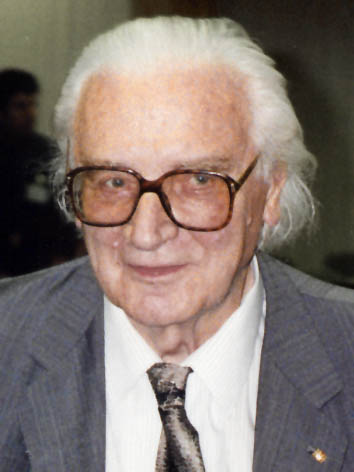
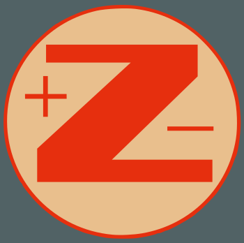

Heute werde ich über eine der wichtigsten Erfindungen unserer Zeit zu sprechen: Der Computer.
Wann wurde der Computer erfunden?
Idee?
1940s?1950s?1960s?Nach 1970s?
Wann wurde der Computer erfunden? Habt ihr eine Idee?
1937
Z1
ein mechanisches Gehirn
Die Z1 ist der erste Rechner der Welt, mit binären Zahlen, mit einer Ein- und Ausgabewerk, ein Rechenwerkm, ein Speicherwerk und ein Programmwerk.
Z1
Technische Spezifikationen
Taktfrequenz: 1 Hz1000kg Gewicht20000 TeileMotorleistung: 1kW
Z1: Modell
Quelle: Wikipedia.de
Aber was ist die Verbindung mit Deutschland?
Konrad Zuse
(Berlin , 1910 - Hünfeld , 1995)

Quelle: Wikipedia.de
Er war ein deutscher Bauingenieur, Erfinder und Unternehmer (er habe die Zuse KG gegründet).
Zuse hat gesagt: "Seit etwa einem Jahr beschäftige ich mich mit dem Gedanken des mechanischen Gehirns.". Das Resultat war der 1938 fertiggestellte, elektrisch angetriebene mechanische Rechner Z1.
Mit seiner Entwicklung der Z3 im Jahre 1941 baute Zuse den ersten vollautomatischen, programmgesteuerten und frei programmierbaren, in binärer Gleitkommarechnung arbeitenden Computer der Welt.
Zuse KG 
Erste Tätigkeit der Firma war die Instandsetzung der 1945 von Konrad Zuse gebauten Z4 und seinen Verleih beziehungsweise.
Zuse KG weiterhin Relais-Computer-Z5 (1952), Z7 und Z11 (1954) herzustellen, Zeichnung Computer Graphomat Z64 (1957). So spät wie 1957 Zuse beschlossen, die Relais-Technologie mit Elektronik zu ändern.
Im Jahr 1958 entwarf Zuse einen Parallelrechner, die nie gebaut wurde. Er nannte es das Feld Rechenmaschine (Feldberechnung Maschine), bestehend aus 50 Prozessoren.
Die Zuse KG wurde von der Siemens AG gekauft und etwa 250 Computer verkauft von 1949 bis 1969 einen Wert von rund 100 Millionen DM.
Wichtige Beiträge
Z3
Berliner Gedenktafel - Methfesselstraße 7, Berlin
Die Z3 enthielt sehr viele Merkmale moderner Rechner: Gleitkommazahlenberechnung, Möglichkeit der Benutzerinteraktion während des Rechenvorgangs, Parallele Ausführung von Operationen so weit wie möglich.
Die Z3 ist auch eine getaktete Maschine: einer Elektromotor ca. 5,3 Mal pro Sekunde dreht und er aktiviert die Steuerung der einzelnen Relaisgruppen.
Wichtige Beiträge
Erste Programmierungssprache
Quelle: heise.de
In 1945 hat Zuse die erste höhere Programmiersprache für seine Maschinen realisiert: Plankalkül.
Neben der reinen Aussagen für die Anzahl Berechnungen, Zuse auch Regeln der mathematischen Logik verwendet.
Um zu zeigen, dass die Plankalkül Sprache verwendet werden könnten, um wissenschaftliche und technische Probleme zu lösen, schrieb Konrad Zuse Dutzende von Beispiel-Programme.
In seinen Notizen findet man die Sortierung der Listen, Suchstrategien, die Beziehungen zwischen Paaren von Listen.
Er selbst verwendet mehr als 60 Seiten, Programme für Schachspielen beschreiben und vorhersagen, dass in rund 50 Jahren kann ein Computer das menschliche Schachweltmeister schlagen.
Wichtige Beiträge
Rechnender Raum
Quelle: K.Zuse, B. Hersfeld - Rechnender Raum (1967)
Sondern war auch der Erste, (in 1967), dass das gesamte Universum auf einem Computer, möglicherweise ein zellulärer Automat (CA) berechnet.
Er bezeichnet dies als "Rechnender Raum" oder Computing Space oder Computing Cosmos
Wichtige Beiträge
Rechnender Raum
Wenn wir den Kosmos als einen großen Computer im Sinne des Rechnender Raum ,
nicht von außen beeinflusst und der Informationsgehalt dieses Systems nicht erhöhen können.
Zuse weist darauf hin, dass die Entropie kann nicht wirklich wachsen.

{kind=link}
{kind=link}